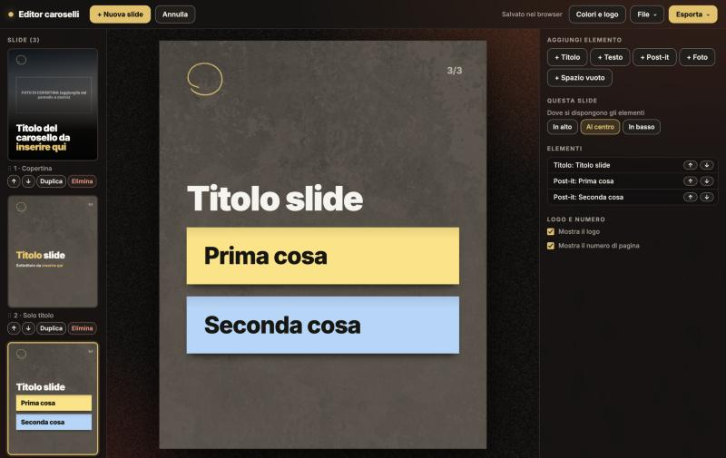

Da telefono il sito non funziona ancora
Se vuoi usarlo (per ora) devi aprire il link da computer
Guarda che figata🤤

Hai fatto modifiche che non sono in nessun file .carosello. Se riparti da zero le perdi (finché non chiudi la pagina le recuperi con "Annulla").